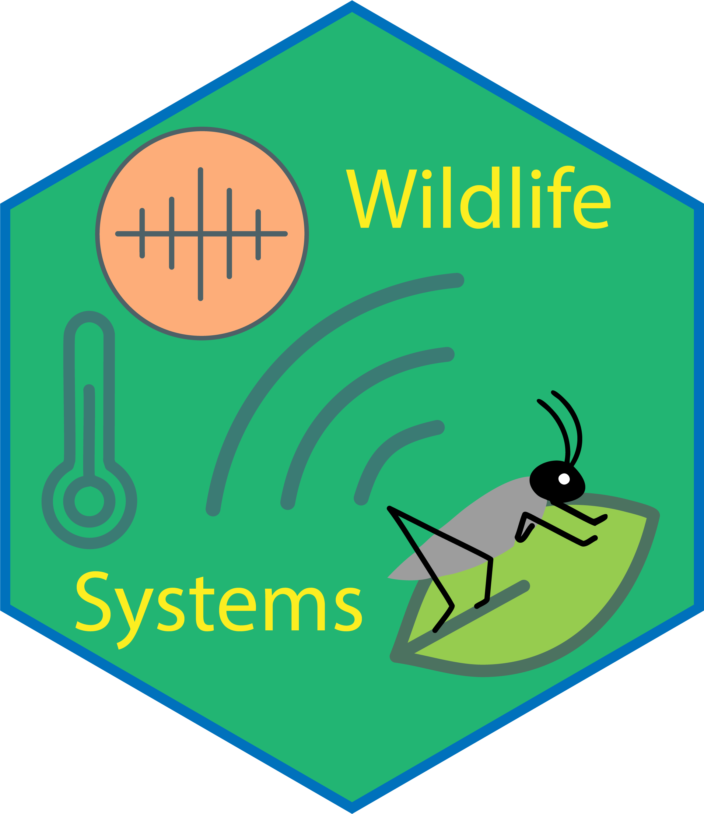

Wildlife Systems Manual
About
Support
1
Biodiversity Technologies
1.1
What are Biodiversity Technologies?
1.1.1
What has enabled Biodiversity Technologies?
1.2
Overall Philosophy
1.2.1
Leverage what already exists
1.2.2
Innovate where necessary
1.2.3
Plan for heterogeneity
1.2.4
Modularise
1.2.5
Open Source
1.3
Structure of Wildlife Systems
1.3.1
Packages
2
Sensor Networks
3
Environmental Sensors
3.1
How sensors work
3.1.1
Temperature
3.1.2
Humidity
3.1.3
Air Pressure
3.1.4
Gases
4
Sensors in WildlifeSystems
4.1
Devices included in the base system
4.2
Installing sensor support
4.3
Reading data from a device
4.4
The sensor reading process
4.5
Installing new sensors
5
Implementing new sensors
5.1
Reading the sensor
5.1.1
In bash
5.1.2
In Python
5.2
Setting the environment
5.3
Install
5.4
The installation process with
si
5.5
Submitting packages to WildlifeSystems
6
Sound Devices
6.1
How sound devices work
7
Sound devices in WildlifeSystems
8
Imaging Devices
8.1
How imaging devices work
9
Imaging devices in WildlifeSystems
10
Power Management
10.1
Installation of power management tools
10.2
Turning funtionality on and off
10.3
Considerations
10.3.1
A note on
sudo
11
Indicators and heartbeats
11.1
Installation of
ws-indcate
and
ws-heartbeat
11.2
Indicators
11.2.1
A note on
sudo
11.3
Heartbeat
12
Developer Guidelines
12.1
Documentation
13
Server Tools
13.1
Installation
13.2
Adding nodes and receieving a token
13.3
Removing a node
References
Appendix
A
Return codes
A.1
00-09 Script functionality
A.2
10-19 Parameter problems
A.3
20-29 Sensor problems
A.4
30-39 Sound device problems
A.5
40-49 Image device problems
A.6
50-59 Power management problems
A.7
60-69 Special meanings
Published with bookdown
WildlifeSystems - biodiversity technologies
Chapter 7
Sound devices in WildlifeSystems